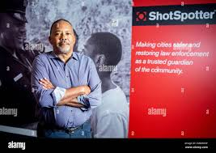

Ralph A. Clark is an African American innovator who is the President and Ceo of his company, ShotSpotter Inc. Clark developed a technology that is a “leader in gunshot detection, location, and forensic analysis” (Jordan). Clark also acquired HunchLab technology, which will help law enforcement predict where crimes are most likely to happen. (Jordan) His company helps guide law enforcement in making crucial decisions relating to crime.
Ralph is the CEO of Guardian Edge: A engineering leading supplier of comprehensive fire, security, and maintenance. This company specializes in Close Protection, Alarm Response, GPS maintenance, and other close related aspects of of innovation that needs protection. He also serves as the vice president of finance for Adaptec: a company engineering diverse material handling and automation solutions with lifecycle service support. They specialize in manufacturing, distribution, and warehousing companies with a goal to create truly tailored solutions for our customers. These should be highlighted as he specializes in a multitude of eras that affect our normal life and will be significantly altered if these contributions aren’t in action.
He is considered underrepresented because he is an African American. In working closely with law enforcement, he is aware of instances of police brutality, aiming to weed out racism in policing, yet acknowledged that it can also be a hindrance (Lynn).
